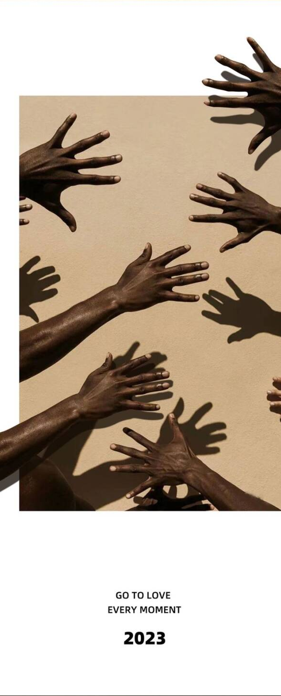
Essay / Music / Memory
昨晚把那封信打开了
献给课业繁忙的十七岁
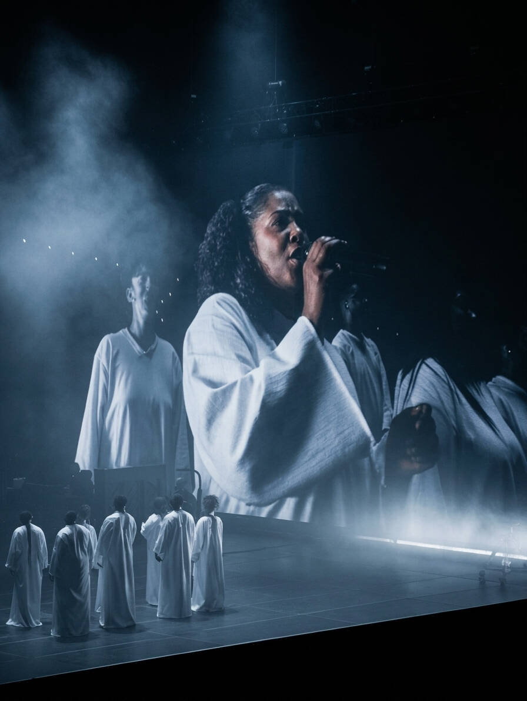
录音室和小桌会的演出 choir，由 Tiana Kruščić 担任 choir director。
昨晚 Daniel Caesar 的 Son of Spergy 亚巡第二场。我坐在新加坡室内体育馆的看台上。舞台上的灯光一层层亮起来。
他站在台上，声音还是那么温吞、确凿。
然后是机械地跟唱、录制，直到《Loose》的最后一个音结束。直到和朋友告别，直到坐了一个小时的红线穿过城市，直到去 7-Eleven 买了一盒速冻意面，直到躺在床上，看着黑黑的天花板。
一种盛大的无名把我裹住。
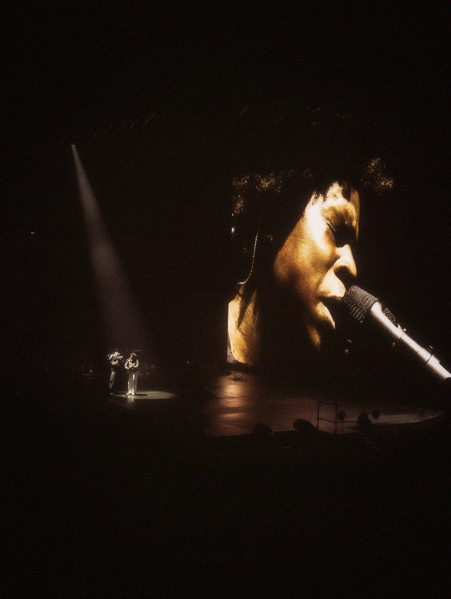
朋友圈配图：Jimi Hendrix - Daniel Caesar。
我发了条朋友圈，说献给课业繁忙的十七岁。倒不如说，是献给茫然无措的、十八岁以前的十七岁。
2023 年夏天，他在香港 KITEC 开演的那晚，我被茫然撞得错过。那段日子像浸没在一颗泡泡里。十七，卡在两条线的罅隙里，一段漫无目的的游荡时间：在公园约会，偷跑去朋友家埋头大睡，在商圈按摩椅里插上耳机。总之，是把香港场错过了。
之后的之后，我看了太多演出，却一直挂着这份遗憾。

MIXTAPE
| Memory | Youth | Music |

就在这次新加坡演唱会前几天，我玩完了《Mixtape》。或者叫《混音青春》，那款刚刚拿下 IGN 年度首个满分的叙事冒险游戏。
《Mixtape》标题画面。
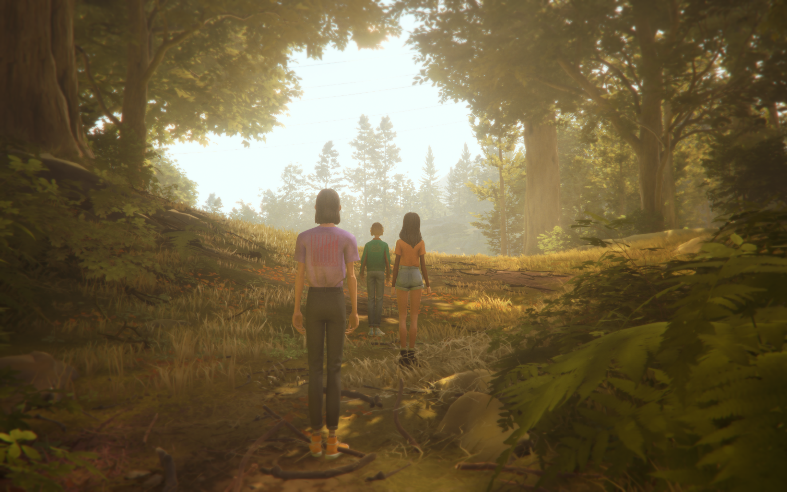
故事很简单：少女 Stacey Rockford 即将离开北加州的小镇前往纽约追梦。临行前的最后一晚，她和两位最好的朋友一起奔赴一场告别派对。途中，一盘亲手制作的混音带把三个人拉进了一段段泛着胶片感的回忆：滑板、初吻、在购物车里逃避警察、深夜闯进废弃的主题公园。你会被音乐和画面拽着往前走，目睹那些“最后一次”。

《Airwalker》，像把整盘混音带一下子推开。

游戏的核心机制是：每一段回忆都被一首歌激活。Joy Division、The Cure、Smashing Pumpkins，那些脍炙人口的九十年代旋律不只是背景音乐，它们是记忆本身的索引。像钥匙一样，插进去，门就开了。
我想，每个人心里大概都有这样一盘混音带。不是一盘真实存在的磁带，而是一份私人的、不成文的记忆：肆意张扬的青春记忆里，某几首歌永久地和某些人、某些地点、某些再也回不去的、如极地冰川般消逝的夏天绑在了一起。
对我来说，Daniel Caesar 的音乐也是这样的存在。

《Mixtape》里被橙色树林卷进去的一幕。
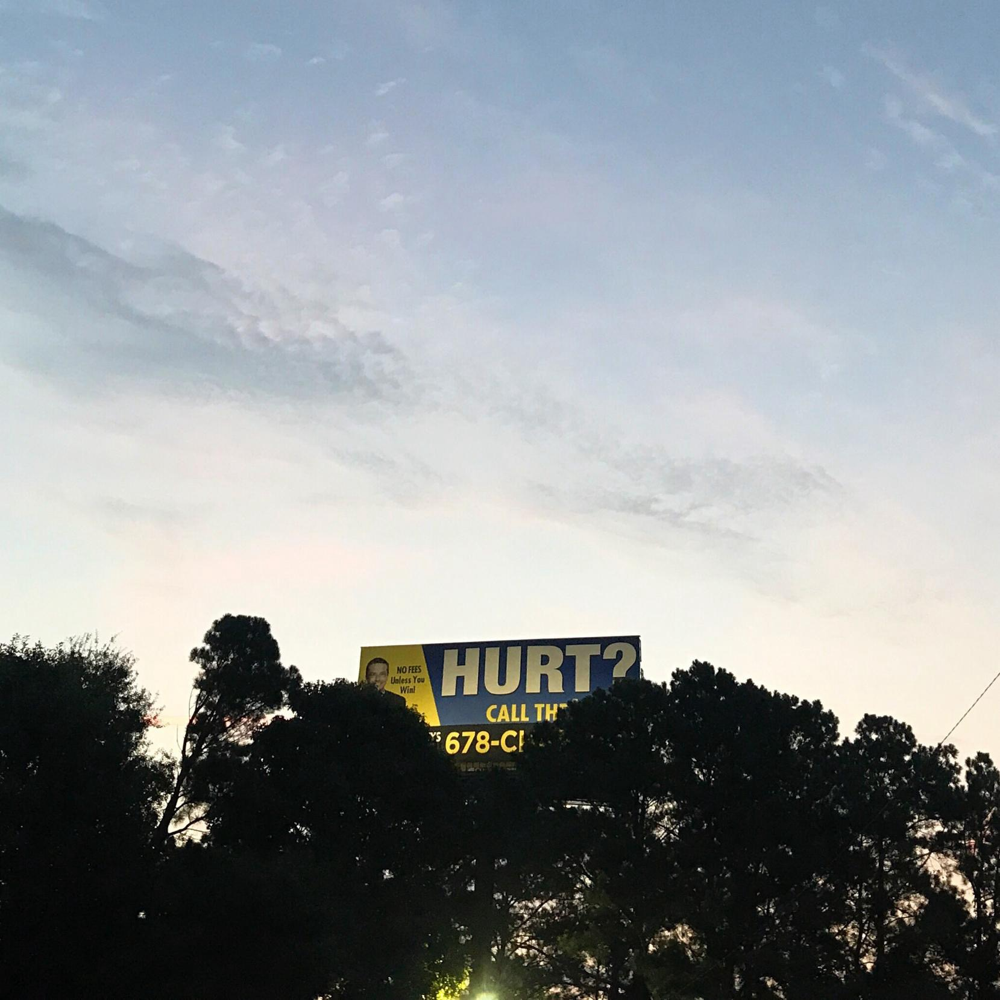
Follies 脱衣舞俱乐部附近的 billboard。歌曲灵感直接来自这里，也是 Daniel 在 Craigslist 广告中提到的地点。
第一次听《Who hurt you》的时候，是一个很随意的下午。
这首歌写的是 Daniel Caesar 在亚特兰大著名的 Follies 脱衣舞俱乐部遇到的一位戴金色假发的 “voluptuous beauty”。他称她为 Priscilla，并为她豪掷千金。之后弄丢了号码，又发了一则 Craigslist，也有了这首歌。从 Freudian 到 Case Study 01，也是我觉得他个人气质最鲜明的时期。于是，我开始迷恋上他音乐里的蓝色雾霭。
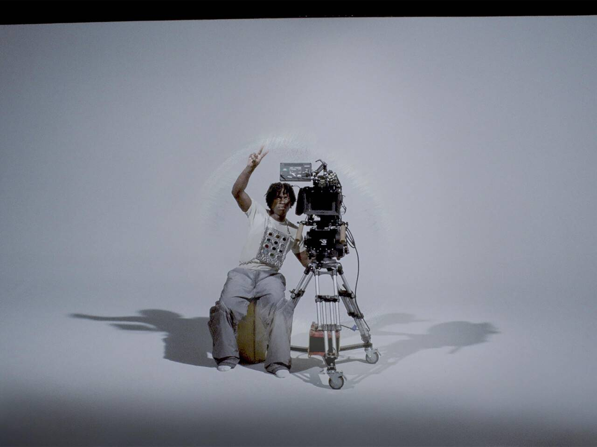
Daniel Caesar 与摄影机。
后来几年，他的歌成了我很多记忆的注脚。那段时光里有些人，有些地方，有些我当时以为会一直持续下去的事情。
所以，在回想 2023 年香港那场演出时，我没去成，就变成了一件不太对的事情。不是那种“错过了一场好演出”的遗憾，而是“错过了一次和过去某个版本的自己照面的机会”。
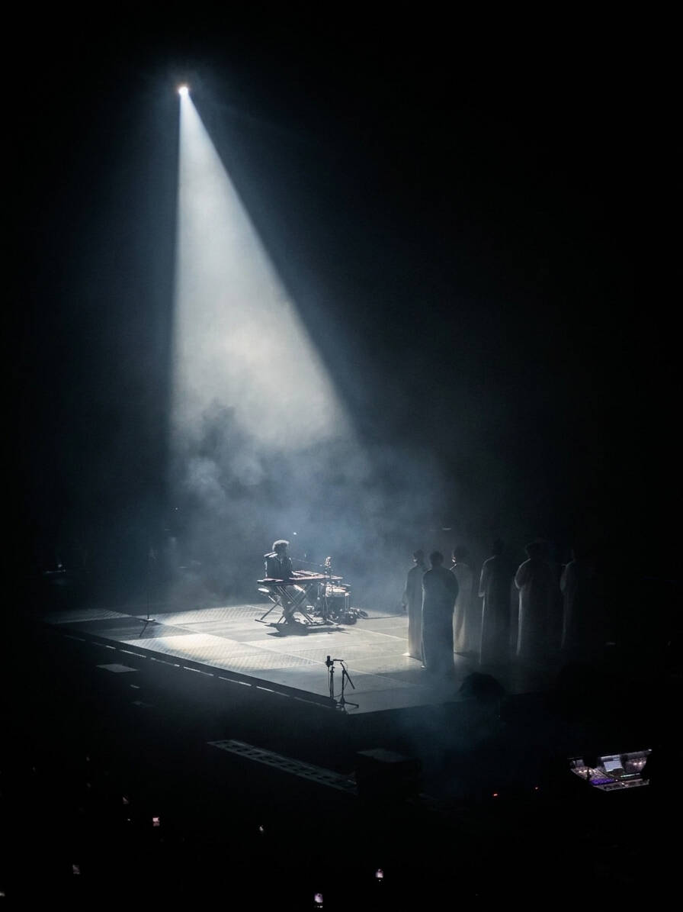
新加坡的夜里，他唱起《Always》。
新加坡的夜里，他唱起《Always》，坐我后面的女生开始低声啜泣。
我没有哭。只感到一种安静的、沉着的东西落在胸口。
我在那一刻明白，我并不是为了那场演出而来，而是为了证明那段时光真实，那些感受没有随风消散。它们被好好地保存在音乐的触媒里，等着你某天被动开启。

Blue Moon Lagoon，三个人坐在湖岸边打水漂。
在游戏的 Chapter 12，打水漂。三个人坐在 Blue Moon Lagoon 的湖岸，Slater 问 Stacey：你的计划是什么。Stacey 说了一大堆，纽约，音乐，梦想。然后 Slater 问：那你还会回蓝月湖吗。
Stacey 说，不会。我肯定要撇清关系。
我在这一幕前哑然，对着湖面瞄准了很久，石子最终还是没有投出去。
我高中的时候非常熟悉这种状态。答案是现成的，决绝的，但底下压着另一种东西，其实根本说不清是留恋还是恐惧。
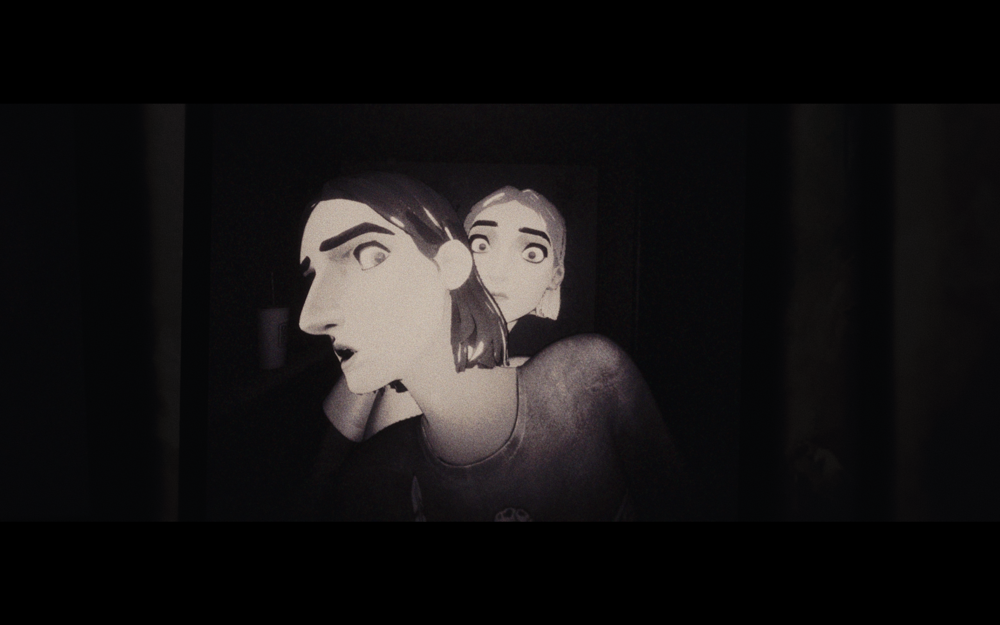
《Mixtape》里那些似曾相识的、带着青春滤镜的情绪碎片。
《Mixtape》游戏里有句话，大意是：这个游戏复刻的不是 90 年代，而是一种“怀旧的感觉”。它讲述的不是你真正经历过的事，而是那些似曾相识的、带着青春滤镜的情绪碎片。即使你没在那个年代长大，也没经历过那样的校园，它依然能击中你。
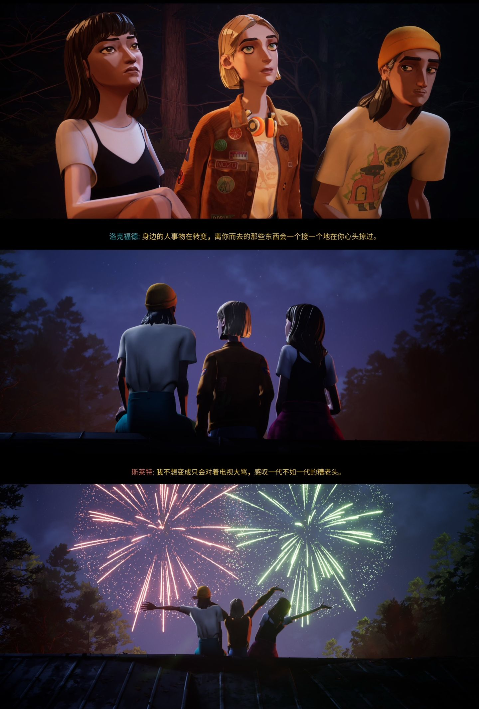
那些会一个接一个在心头掠过的东西。
Stacey Rockford 在游戏最后把那盘混音带交出去，然后动身去往纽约。三个朋友站在原地，彼此知道这是一种终结。游戏没有给你一个煽情的收尾，只是让你坐在那里，看着画面黑去，听着最后一首歌结束。
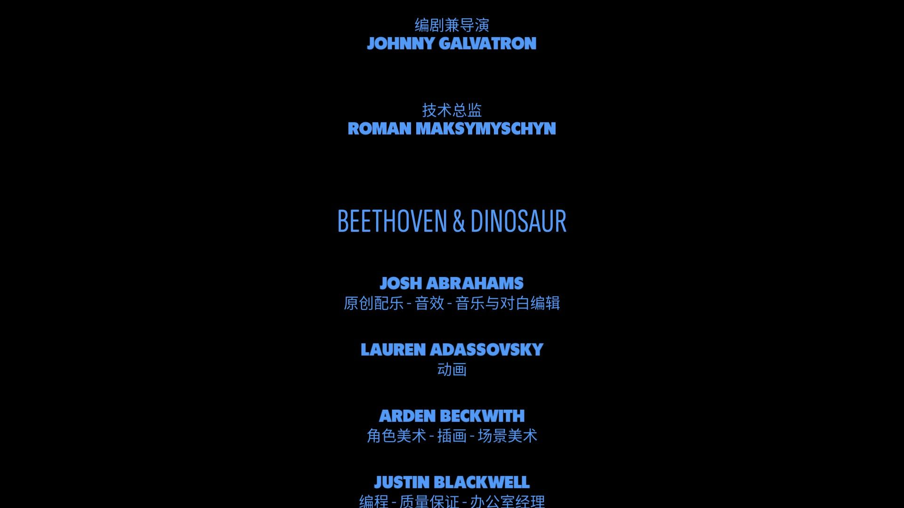
片尾字幕滚过，最后一首歌还在结束。
我坐定，很久没动。
青春本身也是如此。它并不真实地属于任何一段时间、任何一个地点。它是一种质地，是一种你和世界之间还未磨合好时、有点粗糙的状态。它可以是中西部，也可以是纽北，更可以是西南内陆。就像我的十七岁，我以为它会永远在那儿，结果直到二十岁，我才恍然它的结束。
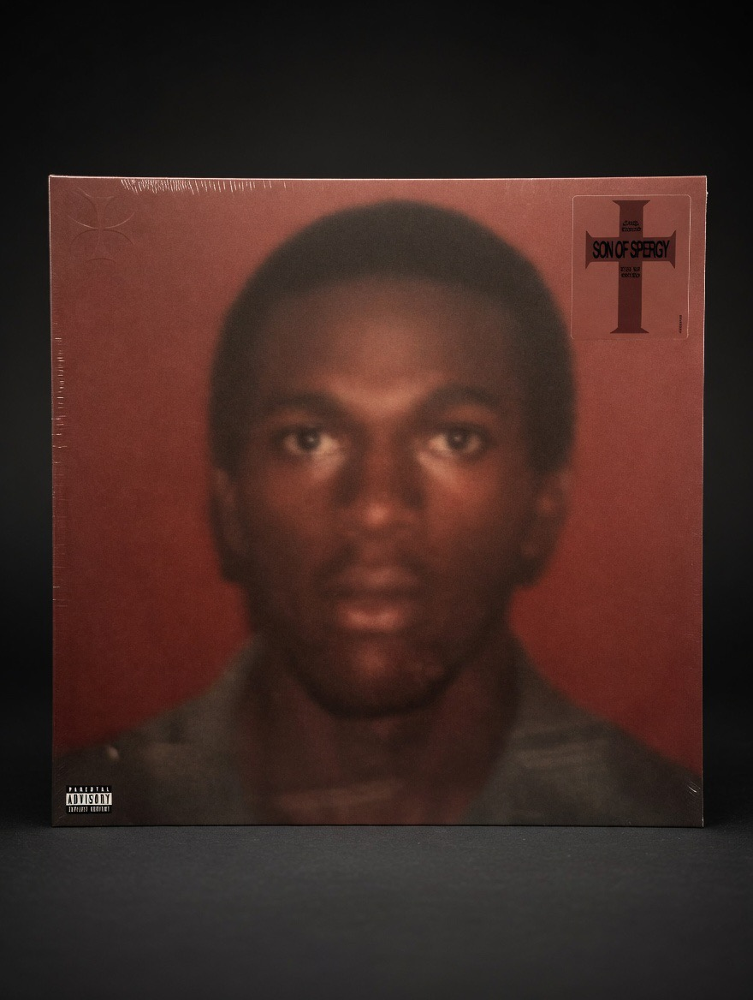
我在现场买的黑胶。
去年的全长乐评里，我写 Daniel Caesar 的音乐议题从不越过自身伤口。写他唱爱欲，唱罪孽，唱父权，写他想对话的父亲始终停在那段冬夜虫鸣、壁炉燃烧的空白里。
这何尝又不是在描述我的青春。我的对抗、逃离、斡旋，在自己的世界里恣意妄为；但最希冀的日子，还是那些谈天说地、少年意气的校园夜晚。
2023 年那场错过，在记忆里一直封存着一种未完成的暂时。那是一段阳光灼人的年岁。
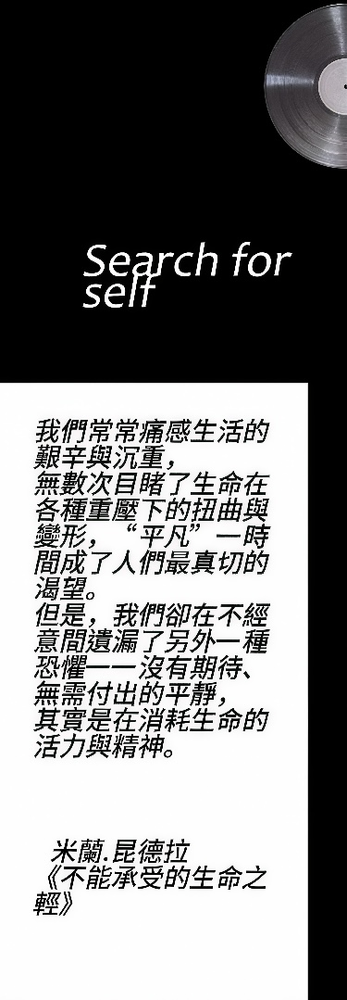
昨晚把那封信打开了。
Daniel Caesar 在台上唱着他父亲的故事，唱着他自己悬置的那些疑问，没有答案。
我在台下跟着唱着，什么都没发生。
“Transform, transform, transform, transform,”
他唱到改变、抵抗、愤怒会散去，也唱到人最终会想念那个曾经在身边的人。
我发完朋友圈，把手机扣在胸口。
献给课业繁忙的十七岁。倒不如说，献给那个在按摩椅里插着耳机，还以为自己会永远记得这首歌是什么感觉的人。
他大概不在了。
也没关系。
DANIEL CAESAR / MIXTAPE / MEMORY / OPEN LETTER